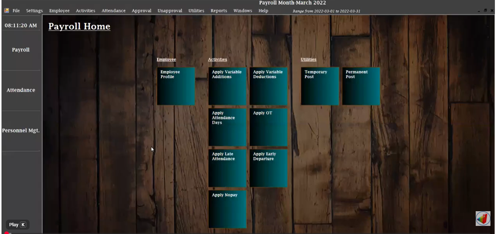
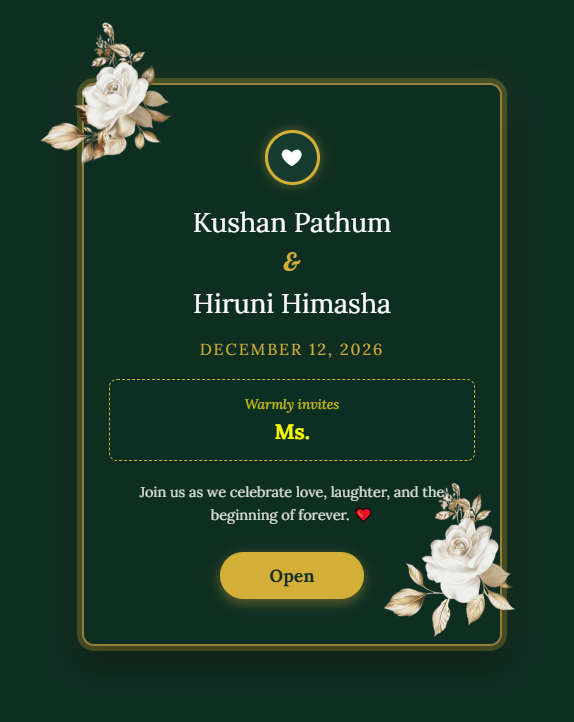
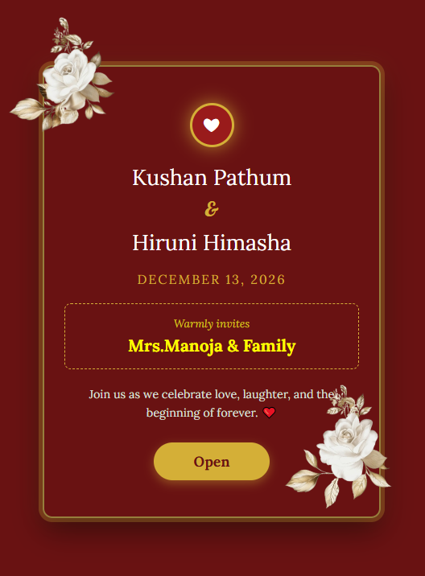
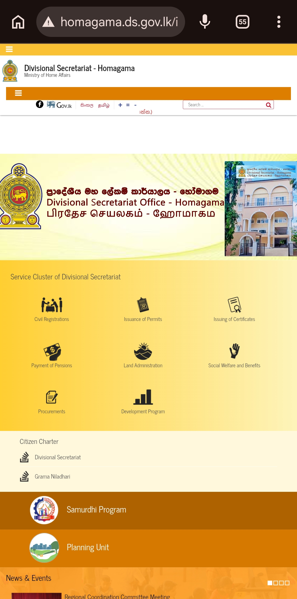

Projects
Selected professional and personal projects

Company Software Demonstration
Software development experience involving payroll, attendance and personnel management systems.
AccMIS.HRM – Human Resource Management System (Windows Forms)
Designed and developed a desktop Human Resource Management application in C# using Windows Forms and Microsoft Visual Studio, structured around a 4-layer N-Tier architecture (AccMIS.HRM.UI, AccMIS.HRM.BLL, AccMIS.HRM.DAL, and AccMIS.HRM.DTO).
Technologies: C#, .NET, MySQL
Layered Desktop Architecture: Decoupled the Windows Forms presentation layer (UI) from business rules (BLL), database operations (DAL), and entity models (DTO) to keep the codebase modular, testable, and easy to maintain.
User-Friendly Desktop Workflows: Built interactive Windows Forms interfaces with input validation and structured data grids to streamline employee record management and daily HR administration.
Tech Stack: C#, .NET, Windows Forms (WinForms), Microsoft Visual Studio, N-Tier Architecture, MySQL.
Watch DemoContribution & Modules: Mastered the legacy payroll workflows and contributed under supervisor guidance to building Updated Version (DevExpress UI & Reports) across Employee Records, Attendance, Overtime, Deductions, Salary Processing, and Reporting modules.

Digital Wedding Invitation
Personal digital invitation website. AI-assisted design and development.
Technologies:
Frontend & UI Framework: HTML5, CSS3 (Custom Animations & Gradients), JavaScript (ES6+), Bootstrap
Interactive Libraries & Media: Swiper.js (photo gallery & slide transitions), HTML5 Audio API (background music player), Google Maps Embed API (venue navigation)
Backend & RSVP Data Storage: Google Apps Script, Google Sheets (automated real-time RSVP and guest wishes tracking)
Graphic Design & Assets: Adobe Photoshop (custom card artwork, floral elements, metallic gradients, and icons)
Version Control & Hosting: Git, GitHub Pages

Homecoming Invitation Website
Personal digital invitation project with AI-assisted development and customisation.
Technologies:
Frontend & UI Framework: HTML5, CSS3 (Custom Animations & Gradients), JavaScript (ES6+), Bootstrap
Interactive Libraries & Media: Swiper.js (photo gallery & slide transitions), HTML5 Audio API (background music player), Google Maps Embed API (venue navigation)
Backend & RSVP Data Storage: Google Apps Script, Google Sheets (automated real-time RSVP and guest wishes tracking)
Graphic Design & Assets: Adobe Photoshop (custom card artwork, floral elements, metallic gradients, and icons)
Version Control & Hosting: Git, GitHub Pages


Desktop Application
Supported the development of an academic software project.
Technologies:C#, .NET, Microsoft SQL Server

Website Maintenance
Website maintenance and content management experience. Add public website details.
View Live Website